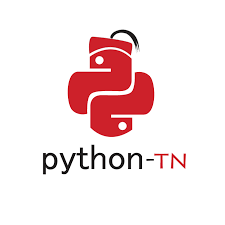

Technologies :
UML, HTML, CSS, JavaScript, Laravel, MySQLTechnologies :
BI, Machine learning, SQl| Projet | description |
|---|---|
| Guide Touristique | Conception et développement d'une application Mobile interactive en Java et XML pour guider les touristes |
| Plateforme de Freelance | Conception et réalisation d'un site web de freelance, impliquant le développement front-end et back-end |
| Responsable de relation extérieur club python isims |  |
| Membre de club tunivision isims |